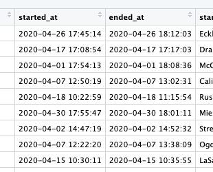

Created this site capturing the steps followed in the final
phase of Google Data Analyst certification couse [using R]
(http://www.coursera.org/google-certificates/data-analytics-certificate)
Note
This was Inspired & Influenced by the work of :
JHELISON GABRIEL LIMA UCHOA
Note:
While resuing these R
commands - you may have to remove the + signs, as it is it may give
error, use the + signs when needed, and remove the + signs which is
usually prefixed in the begining of each command
Lets pick this dataset available in public
https://www.kaggle.com/datasets/timgid/cyclistic-dataset-google-certificate-capstone
we shall not be using the DB in Kaggle directly-
(I was getting
prolonged delays in kaggle and at times the error message is not
displayed... so i shall do this with RStudio and paste the result
here)
Once you download this is how the files will be
Once you move them to a specific folder in your
system- this is how they look in side R studio
There are few steps here
a) we need to combine all of them in to one CSV file
b) then we need to load this in R studio (by creating DF (DataFrame)
of CSV in R - for further processing
library(tidyverse)
── Attaching core tidyverse packages ──────────────────────── tidyverse 2.0.0 ──
✔ dplyr 1.1.2 ✔ readr 2.1.4
✔ forcats 1.0.0 ✔ stringr 1.5.0
✔ ggplot2 3.4.2 ✔ tibble 3.2.1
✔ lubridate 1.9.2 ✔ tidyr 1.3.0
✔ purrr 1.0.1
── Conflicts ────────────────────────────────────────── tidyverse_conflicts() ──
✖ dplyr::filter() masks stats::filter()
✖ dplyr::lag() masks stats::lag()
ℹ Use the conflicted package (<http://conflicted.r-lib.org/>) to force all conflicts to become errors
Combining all these individual CSV to one common CSV is down in this
sequence
a) we list them in a file with the full path - using list
function
b) using row bind function and lappy function - we pass on these files one by one in to a single BIG csv file - which wil be our Datafarme for this project
csv_files<-list.files(path = "../GDA ProjectR/KaggleDataSet/", recursive = TRUE,full.names = TRUE)
// this is step a)prefixing the full pathon top of the file name
> csv_files
[1] "../GDA ProjectR/KaggleDataSet//202004-divvy-tripdata.csv" "../GDA ProjectR/KaggleDataSet//202005-divvy-tripdata.csv"
[3] "../GDA ProjectR/KaggleDataSet//202006-divvy-tripdata.csv" "../GDA ProjectR/KaggleDataSet//202007-divvy-tripdata.csv"
[5] "../GDA ProjectR/KaggleDataSet//202008-divvy-tripdata.csv" "../GDA ProjectR/KaggleDataSet//202009-divvy-tripdata.csv"
[7] "../GDA ProjectR/KaggleDataSet//202010-divvy-tripdata.csv" "../GDA ProjectR/KaggleDataSet//202011-divvy-tripdata.csv"
[9] "../GDA ProjectR/KaggleDataSet//202012-divvy-tripdata.csv" "../GDA ProjectR/KaggleDataSet//Divvy_Trips_2020_Q1.csv" > combinedcsv_MasterDF<-do.call(rbind,lapply(csv_files,read.csv))
what is rbind? (row bind, cbind = column bind)
what is Lapply()- it takes each element of array/matric and applies the functions and returns the new value
now we have this one combined master datafarme for our project
(View with V in caps)*we need to ensure that there are no duplicates in this Dataframe
this step is needed before we proceed further
**This is the command
for that
sum(duplicated(combinedcsv_MasterDF$ride_id))
[1] 209
so we have 209 duplicate entries with the ride_id column (we are
considering this as a sort of primary key)
This command helps us ot
check the number of unique rows in a data frame
length(unique(combinedcsv_MasterDF$ride_id))
[1] 3541474
length(combinedcsv_MasterDF$ride_id)
[1] 3541683
So it is clear if we remove the duplicate entries, we will have
3541474 entries our dataframe*
> CleanMasterDF<-combinedcsv_MasterDF[!duplicated(combinedcsv_MasterDF$ride_id),]
> View(CleanMasterDF)
> length(CleanMasterDF)
[1] 13
> length(CleanMasterDF$ride_id)
[1] 3541474The columns started at and ended at - have Date and Time combined as
Timestamp

We need to get this formatted, so that we can do
the end hrs-start hrs and get the ride duration data
these will simplyfy and help in our calcualtions
currently these columns are set as chr, which chr we can not do any minus operations
> str(CleanMasterDF)
'data.frame': 3541474 obs. of 13 variables:
$ ride_id : chr "A847FADBBC638E45" "5405B80E996FF60D" "5DD24A79A4E006F4" "2A59BBDF5CDBA725" ...
$ rideable_type : chr "docked_bike" "docked_bike" "docked_bike" "docked_bike" ...
$ started_at : chr "2020-04-26 17:45:14" "2020-04-17 17:08:54" "2020-04-01 17:54:13" "2020-04-07 12:50:19" ...
$ ended_at : chr "2020-04-26 18:12:03" "2020-04-17 17:17:03" "2020-04-01 18:08:36" "2020-04-07 13:02:31" ..So lets change them in to POSIXct format<br>
R uses different functions for dealing with date and time like as.Date ()
which only deals with the date value,etc POSIXct () is used for handling the date, time and time zones in R.
In POSIXct, the ct stands for calendar time.lets execute these commands<br>
> CleanMasterDF$formatted_starttime<-as.POSIXct(CleanMasterDF$started_at,tz=Sys.timezone(),format="%Y-%m-%d %H:%M:%S")
> CleanMasterDF$formatted_endtime<-as.POSIXct(CleanMasterDF$ended_at,tz=Sys.timezone(),format="%Y-%m-%d %H:%M:%S")
This will create 2 new reformatted columns
Now you can see the change in the format with str command
$ formatted_starttime: POSIXct, format: "2020-04-26 17:45:14" "2020-04-17 17:08:54" "2020-04-01 17:54:13" "2020-04-07 12:50:19" ...
$ formatted_endtime : POSIXct, format: "2020-04-26 18:12:03" "2020-04-17 17:17:03" "2020-04-01 18:08:36" "2020-04-07 13:02:31" ...It is now possible to subtract from these two columns and get the Ride hours as a separate column
> CleanMasterDF<-CleanMasterDF %>%
+ mutate(ride_time_mints=as.numeric(CleanMasterDF$formatted_endtime-CleanMasterDF$formatted_starttime)/60)
Next, lets look at the start time column - if we have to get inisghts in terms of which day,
which month, which time of the day- there were max/minimum usage - then we need to break this combined TIMESTAMP
column in to separate columns - only then - it becomes easy for our analysis
CleanMasterDF<-CleanMasterDF %>%
mutate(trip_Month=strftime(CleanMasterDF$formatted_starttime,"%m"))
refer to this documentation to know more about strftime function in R
Now we can see the new column with the number - representing each
month
This command will update the same with Text |
CleanMasterDF<-CleanMasterDF %>%
mutate(trip_Month_name=strftime(CleanMasterDF$formatted_starttime,"%b"))<br>> unique(CleanMasterDF$trip_Month_name)
[1] "Apr" "May" "Jun" "Jul" "Aug" "Sep" "Oct" "Nov" "Dec" "Jan" "Feb" "Mar"
> unique(CleanMasterDF$trip_Month)
[1] "04" "05" "06" "07" "08" "09" "10" "11" "12" "01" "02" "03"Next step is to add a week day NAME column, so that we can perform analysis on which day of the week, we had usage etc
we use strftime with "%a" this time
> CleanMasterDF<-CleanMasterDF %>%
+ mutate(trip_day=strftime(CleanMasterDF$formatted_starttime,"%a"))//then lets add a column for the START HOUR
start hour - adding a column for this
we use %H for this
# # Hours as decimal number (00–23). As a special exception strings such as ‘24:00:00’ are accepted for input, since ISO 8601 allows these.
CleanMasterDF<-CleanMasterDF %>%
+ mutate(trip_starthour=strftime(CleanMasterDF$formatted_starttime,"%H"))Now we are good with additional columns we wanted for analysis - we
can begin the deep dive now with the questions
we can save this back in an excel/CSV to avoid the rework - if anything goes wrong - we can always read this back in to a dataframe
> CleanMasterDF %>% write.csv("cleanedupfileforDataframe.csv")
> getwd()
[1] "/Users/rkrishnamurthy1/RFiles"
> setwd("/Users/rkrishnamurthy1/GDA ProjectR/")
> CleanMasterDF %>% write.csv("cleanedupfileforDataframe.csv")
this can be later used like this : CleanMasterDF<-read.csv("cleanedupfileforDataframe.csv")
**1. what is the usage of memebers VS casual?
Rideable_type : How many types of bikes are there and their usage
%
member_casual :
what is the percentage of member and casual,
what is their usage over weekdays?
what is the relation of bike
type for each of them
Lets begin with rideable_type column
CleanMasterDF %>%
'+ group_by(rideable_type) %>%
'+ summarise(count=length(rideable_type),
'+ '%'=(length(rideable_type)/nrow(CleanMasterDF))*100)
A tibble: 3 × 3
rideable_type count%
1 classic_bike 70616 1.99
2 docked_bike 2966113 83.8
3 electric_bike 504745 14.3
we have seen the split/distribution of the different bikes now - lets see the same via plots <br>
ggplot(CleanMasterDF,aes(x=factor(rideable_type),fill=factor(rideable_type)))+
geom_bar()+geom_label(aes(label=..count..), vjust=1,stat='count',position = "stack")+
scale_y_continuous(labels = function(x) format(x, scientific = FALSE))Conclusion is
- docked bike is more with 84%
- Next followed by electric bike with 14%
Next lets take the member_cacual column for analysis
> CleanMasterDF %>%
+ group_by(member_casual) %>%
+ summarise(count=length(ride_id),'%'=(length(ride_id)/nrow(CleanMasterDF))*100)
# A tibble: 2 × 3
member_casual count `%`
<chr> <int> <dbl>
1 casual 1366550 38.6
2 member 2174924 61.4
> ggplot(CleanMasterDF,aes(member_casual,fill=member_casual))+geom_bar()+labs(x="Casual Vs Members(X axis)",title = 'Chart 02 - Casual VS Members Distribution')+
+ geom_label(aes(label=..count..), vjust=1,stat='count',position = "stack")+
+ scale_y_continuous(labels = function(x) format(x, scientific = FALSE))
Error in parse(text = x, srcfile = src): <text>:1:1: unexpected '>'
1: >
^
Traceback:
Conclusion isCasual users are less with 38%
Members are more with 61%
Now lets take the trip MONTH column
> CleanMasterDF %>%
+ group_by(CleanMasterDF$trip_Month_name) %>%
+ summarise(count=length(ride_id),"Percentage%"=(length(ride_id)/nrow(CleanMasterDF))*100)
# A tibble: 12 × 3
`CleanMasterDF$trip_Month_name` count `Percentage%`
<chr> <int> <dbl>
1 Apr 84776 2.39
2 Aug 622361 17.6
3 Dec 131364 3.71
4 Feb 139585 3.94
5 Jan 143884 4.06
6 Jul 551480 15.6
7 Jun 343005 9.69
8 Mar 143418 4.05
9 May 200274 5.66
10 Nov 259716 7.33
11 Oct 388653 11.0
12 Sep 532958 15.0 we can actually move/convert this in to a temporary dataframe - inorder to not to use the entire DF, this will result in faster responses
tempDF_month<-CleanMasterDF %>%
group_by(CleanMasterDF$trip_Month_name) %>%summarise(count=length(ride_id),"Percentage%"=(length(ride_id)/nrow(CleanMasterDF))*100)View(tempDF_month)
Now lets chart this out wiht %
ggplot(tempDF_month,aes(x=Month,y=count))+
+ geom_point()+
+ geom_bar(stat='identity',fill='lightblue',color='red')+
+ scale_y_continuous(labels = function(x) format(x, scientific = FALSE))+
+ geom_label(aes(label=count), vjust=1,position = "stack")Conslusion is Jul, Aug and sep are the months with the highest usage
If we need to plot in the month asending order, - then use this
command
tempDF_month<-tempDF_month %>%
mutate(Month=factor(Month,levels=month.abb))%>% arrange(Month)We can do further analysis comparing the seasonality /factors influencing the increase
in rides during these months (Temperature, weather, holiday etc)Now lets continue with the week day column for our analysis
tempDF_day<-CleanMasterDF %>%
group_by(CleanMasterDF$trip_day) %>%summarise(count=length(ride_id),"pers"=(length(ride_id)/nrow(CleanMasterDF))*100)View(tempDF_day) colnames(tempDF_day)[1]<-'weekday'
> ggplot(tempDF_day,aes(x=reorder(weekday,-count),y=count))+
+ geom_point()+
+ geom_bar(stat='identity',fill='lightblue',color='green')+
+ scale_y_continuous(labels = function(x) format(x, scientific = FALSE))+
+ geom_text(aes(label=count),size = 4, hjust = 0.5, vjust = 1.5, position = "stack")
Conclusion
Next it will make sense to add the members and casual riders in to this table and see how they show up
> tempDF_day_members<-as.data.frame(CleanMasterDF %>%
+ group_by(trip_day) %>%
+ summarise(
+ count=length(ride_id),
+ 'members'=sum(member_casual=="member"),
+ 'casual'=sum(member_casual=="casual")
+ ))
> View(tempDF_day_members)
it was difficult to print the chart in a single one, so lets try creating 2
memberplot<-ggplot(tempDF_day_members,aes(x=trip_day,y=casual))+labs(x='WeekDays',title="memebr riders distribution by Weekday")+ geom_point()+
geom_bar(stat='identity',fill='lightblue',color='green',width=.7)+scale_y_continuous(labels = function(x) format(x, scientific = FALSE))+ geom_text(aes(label=members),size = 4, hjust = 0.5, vjust = 1.5, position = "stack")casualplot<-ggplot(tempDF_day_members,aes(x=trip_day,y=casual))+labs(x='WeekDays',title="casual riders Distribution by Weekday")+ geom_point()+
geom_bar(stat='identity',fill='lightgray',color='red',width=.7)+scale_y_continuous(labels = function(x) format(x, scientific = FALSE))+ geom_text(aes(label=casual),size = 4, hjust = 0.5, vjust = 1.5, position = "stack")casualplot
memberplot
ggarrange(casualplot,memberplot) (for this we should use this first library(ggpubr))
if we have to do this in a single plot - then we need to do little bit of formatting change in the dataframe, (I tried and could not find any other option for this - may be there is another better option, I am not sure)
we used be using MELT function to achieve this Melt needs this libraries
install.packages("MASS")
install.packages("reshape2")
install.packages("reshape")
library(MASS)
library(reshape2)
library(reshape)
tempDF_day_members_updated<-melt(tempDF_day_members,id.vars="trip_day")
View(tempDF_day_members_updated)
Lets remove the count column
tempDF_day_members1<-tempDF_day_members[,-2]
View(tempDF_day_members1)
tempDF_day_members_updated<-melt(tempDF_day_members1,id.vars="trip_day")
> ggplot(tempDF_day_members_updated,aes(x=reorder(trip_day,value),y=factor(value),fill=factor(variable)))
+ geom_bar(position=position_dodge(width=1),stat='identity')+ geom_text(
+ aes(x=factor(trip_day),y=factor(value),label=value),position=position_dodge(width=1),vjust=-0.5,size=3)
Conclusion
- Except for Saturday - members count is more than cacual riders
- Most of the members are using bikes on wednesday, thursday and then friday
- Saturday has highiest number of riders
Next lets focus on the ride hour to understand which time of the day - the we have most rides
CleanMasterDF %>%
+ group_by(trip_starthour) %>%
+ summarise(count = length(ride_id),
+ '%' = (length(ride_id) / nrow(cycledf)) * 100,
+ 'members_p' = (sum(member_casual == "member") / length(ride_id)) * 100,
+ 'casual_p' = (sum(member_casual == "casual") / length(ride_id)) * 100,
+ 'member_casual_perc_difer' = members_p - casual_p) %>% print(n=40)
# A tibble: 24 × 6
trip_starthour count `%` members_p casual_p member_casual_perc_difer
<int> <int> <dbl> <dbl> <dbl> <dbl>
1 0 33083 0.934 36.0 64.0 -28.0
2 1 19918 0.562 33.6 66.4 -32.7
3 2 11092 0.313 33.3 66.7 -33.3
4 3 6282 0.177 37.5 62.5 -25.1
5 4 7197 0.203 56.1 43.9 12.2
6 5 24758 0.699 79.4 20.6 58.8
7 6 75787 2.14 83.7 16.3 67.4
8 7 135220 3.82 83.6 16.4 67.2
9 8 161060 4.55 80.9 19.1 61.9
10 9 134959 3.81 70.6 29.4 41.1
11 10 150723 4.26 62.4 37.6 24.8
12 11 194728 5.50 60.3 39.7 20.6
13 12 230444 6.51 59.3 40.7 18.6
14 13 237768 6.71 57.1 42.9 14.1
15 14 243583 6.88 55.5 44.5 11.0
16 15 268049 7.57 57.4 42.6 14.8
17 16 317065 8.95 62.0 38.0 23.9
18 17 370751 10.5 64.1 35.9 28.1
19 18 315472 8.91 61.7 38.3 23.4
20 19 226646 6.40 59.0 41.0 18.1
21 20 147450 4.16 55.7 44.3 11.5
22 21 97127 2.74 51.6 48.4 3.25
23 22 76138 2.15 45.2 54.8 -9.58
24 23 56174 1.59 40.3 59.7 -19.4
> Lets create a dataframe for this
tempDF_hour<-CleanMasterDF %>%
group_by(trip_starthour) %>% summarise(count = length(ride_id),'%' = (length(ride_id) / nrow(cycledf)) * 100,'members_p' = (sum(member_casual == "member") / length(ride_id)) * 100,'casual_p' = (sum(member_casual == "casual") / length(ride_id)) * 100,'member_casual_perc_difer' = members_p - casual_p) %>% print(n=40)CleanMasterDF %>%
+ ggplot(aes(trip_starthour, fill=member_casual)) +
+ labs(x="Hour of the day", title="Chart - Distribution by hour of the day") +
+ geom_bar()Error in CleanMasterDF %>% +ggplot(aes(trip_starthour, fill = member_casual)): could not find function "%>%"
Traceback:
Lets try to see it separately for all days
CleanMasterDF%>%
ggplot(aes(trip_starthour, fill=member_casual)) +geom_bar()+labs(x="Hour of the day", title="Chart for Distribution by hour of the day - divided by weekday") +facet_wrap(~trip_day)Lets try another view
CleanMasterDF %>%
+ mutate(type_of_day=ifelse(trip_day=='Sun'| trip_day=='Sat','weekends','weekdays'))%>%
+ ggplot(aes(trip_starthour, fill=member_casual)) + labs(x="Hour of the day", title="Chart for - Distribution by hour of the day - in the midweek")+
+ geom_bar()+facet_wrap(~type_of_day)Lets do some graphs on the ride types
> table(CleanMasterDF$rideable_type,CleanMasterDF$member_casual)
casual member
classic_bike 11319 59297
docked_bike 1146005 1820108
electric_bike 209226 295519To get the total in the table - we can try this
> tempdf1<-table(CleanMasterDF$rideable_type,CleanMasterDF$member_casual)
> tempdf2<-cbind(tempdf1, Total=rowSums(tempdf1))
> tempdf2
casual member Total
classic_bike 11319 59297 70616
docked_bike 1146005 1820108 2966113
electric_bike 209226 295519 504745
> ggplot(cycledf, aes(rideable_type, fill=member_casual)) +
+ labs(x="Rideable type", title="Chart 07 - Distribution of types of bikes") +
+ geom_bar() +
+ scale_y_continuous(labels = function(x) format(x, scientific = FALSE))+
+ geom_label(aes(label=..count..), vjust=1,stat='count',position = "stack")Docked bikes has more rides,
Members have a bigger preference for classic bikes, .
Also for electric bikes.
What we couldd gather
How members differs from casuals:
Members also have a bigger preference for classic bikes, so they can exercise when going to work.
Conclusion
Members use the bikes for fixed activities, one of those is going to work. Bikes are used for recreation on the weekends. Rides are influenced by temperature.(to be correalted with the temperature data of this perticular region)